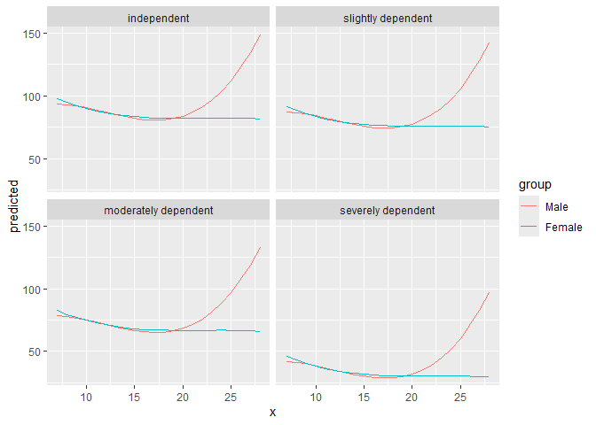

Lüdecke D (2018). ggeffects: Tidy Data Frames of Marginal Effects from Regression Models. Journal of Open Source Software, 3(26), 772. doi: 10.21105/joss.00772
Why do we need (marginal/conditional) effects or (adjusted) predicted values?
Results of regression models are typically presented as tables that are easy to understand. For more complex models that include interaction or quadratic / spline terms, tables with numbers are less helpful and difficult to interpret. In such cases, marginal effects or adjusted predictions are far easier to understand. In particular, the visualization of such effects or predictions allows to intuitively get the idea of how predictors and outcome are associated, even for complex models.
Aim of this package
ggeffects is a light-weight package that aims at easily calculating marginal effects and adjusted predictions (or: estimated marginal means) at the mean or at representative values of covariates (see definitions here) from statistical models, i.e. predictions generated by a model when one holds the non-focal variables constant and varies the focal variable(s). Furthermore, it is possible to compute contrasts or pairwise comparisons, to test predictions and differences in predictions for statistical significance.
This is achieved by three core ideas that describe the philosophy of the function design:
Functions are type-safe and always return a data frame with the same, consistent structure;
there is a simple, unique approach to calculate marginal effects/adjusted predictions and estimated marginal means for many different models;
the package supports “labelled data” (Lüdecke 2018), which allows human readable annotations for graphical outputs.
This means, users do not need to care about any expensive steps after modeling to visualize the results. The returned as data frame is ready to use with the ggplot2-package, however, there is also a plot()-method to easily create publication-ready figures.
Installation
| Type | Source | Command |
|---|---|---|
| Release | CRAN | install.packages("ggeffects") |
| Development | r - universe | install.packages("ggeffects", repos = "https://strengejacke.r-universe.dev") |
| Development | GitHub | remotes::install_github("strengejacke/ggeffects") |
Or you can run ggeffects::install_latest() to install the latest development version from r-universe.
Definition of “marginal effects”
There is no common language across fields regarding a unique meaning of “marginal effects”. Thus, the wording throughout this package may vary. Maybe “adjusted predictions” comes closest to what ggeffects actually does. To avoid confusion about what is actually calculated and returned by the package’s functions ggpredict(), ggemmeans() and ggeffect(), it is recommended to read this vignette about the different terminology and its meanings.
Documentation and Support
Please visit https://strengejacke.github.io/ggeffects/ for documentation and vignettes. For questions about the functionality, you may either contact me via email or also file an issue.
ggeffects supports many different models and is easy to use
Marginal effects and adjusted predictions can be calculated for many different models. Currently supported model-objects are: ‘averaging’, ‘bamlss’, ‘bayesx’, ‘betabin’, ‘betareg’, ‘bglmer’, ‘bigglm’, ‘biglm’, ‘blmer’, ‘bracl’, ‘brglm’, ‘brmsfit’, ‘brmultinom’, ‘cgam’, ‘cgamm’, ‘clm’, ‘clm2’, ‘clmm’, ‘coxph’, ‘feglm’, ‘fixest’, ‘gam’, ‘Gam’, ‘gamlss’, ‘gamm’, ‘gamm4’, ‘gee’, ‘geeglm’, ‘glimML’, ‘glm’, ‘glm.nb’, ‘glmer.nb’, ‘glmerMod’, ‘glmmPQL’, ‘glmmTMB’, ‘glmrob’, ‘glmRob’, ‘glmx’, ‘gls’, ‘hurdle’, ‘ivreg’, ‘lm’, ‘lm_robust’, ‘lme’, ‘lmerMod’, ‘lmrob’, ‘lmRob’, ‘logistf’, ‘logitr’, ‘lrm’, ‘mblogit’, ‘mclogit’, ‘MCMCglmm’, ‘merModLmerTest’, ‘MixMod’, ‘mixor’, ‘mlogit’, ‘multinom’, ‘negbin’, ‘nlmerMod’, ‘ols’, ‘orm’, ‘phyloglm’, ‘phylolm’, ‘plm’, ‘polr’, ‘rlm’, ‘rlmerMod’, ‘rq’, ‘rqss’, ‘speedglm’, ‘speedlm’, ‘stanreg’, ‘survreg’, ‘svyglm’, ‘svyglm.nb’, ‘tidymodels’, ‘tobit’, ‘truncreg’, ‘vgam’, ‘vglm’, ‘wblm’, ‘wbm’, ‘Zelig-relogit’, ‘zeroinfl’ and ‘zerotrunc’.
Support for models varies by function, i.e. although ggpredict(), ggemmeans() and ggeffect() support most models, some models are only supported exclusively by one of the three functions. Other models not listed here might work as well, but are currently not tested.
Interaction terms, splines and polynomial terms are also supported. The main functions are ggpredict(), ggemmeans() and ggeffect(). There is a generic plot()-method to plot the results using ggplot2.
Examples
The returned data frames always have the same, consistent structure and column names, so it’s easy to create ggplot-plots without the need to re-write the function call. x and predicted are the values for the x- and y-axis. conf.low and conf.high could be used as ymin and ymax aesthetics for ribbons to add confidence bands to the plot. group can be used as grouping-aesthetics, or for faceting.
ggpredict() requires at least one, but not more than four terms specified in the terms-argument. Predicted values of the response, along the values of the first term are calculated, optionally grouped by the other terms specified in terms.
Adjusted predictions for one focal predictor
library(ggeffects)
library(splines)
data(efc)
fit <- lm(barthtot ~ c12hour + bs(neg_c_7) * c161sex + e42dep, data = efc)
ggpredict(fit, terms = "c12hour")
#> # Predicted values of barthtot
#>
#> c12hour | Predicted | 95% CI
#> ------------------------------------
#> 4 | 67.89 | [65.81, 69.96]
#> 12 | 67.07 | [65.10, 69.05]
#> 22 | 66.06 | [64.18, 67.94]
#> 36 | 64.64 | [62.84, 66.45]
#> 49 | 63.32 | [61.51, 65.14]
#> 70 | 61.20 | [59.22, 63.17]
#> 100 | 58.15 | [55.70, 60.60]
#> 168 | 51.26 | [47.27, 55.26]
#>
#> Adjusted for:
#> * neg_c_7 = 11.83
#> * c161sex = 1.76
#> * e42dep = 2.93A possible call to ggplot could look like this:
library(ggplot2)
mydf <- ggpredict(fit, terms = "c12hour")
ggplot(mydf, aes(x, predicted)) +
geom_line() +
geom_ribbon(aes(ymin = conf.low, ymax = conf.high), alpha = .1)
However, there is also a plot()-method. This method uses convenient defaults, to easily create the most suitable plot for the marginal effects.

Adjusted predictions for several focal predictors
With three variables, predictions can be grouped and faceted.
ggpredict(fit, terms = c("neg_c_7", "c161sex", "e42dep"))
#> # Predicted values of barthtot
#>
#> # c161sex = 1
#> # e42dep = 1
#>
#> neg_c_7 | Predicted | 95% CI
#> -------------------------------------
#> 7 | 102.74 | [95.96, 109.52]
#> 12 | 102.27 | [97.10, 107.44]
#> 17 | 93.79 | [86.95, 100.64]
#> 28 | 164.57 | [95.88, 233.27]
#>
#> # c161sex = 2
#> # e42dep = 1
#>
#> neg_c_7 | Predicted | 95% CI
#> --------------------------------------
#> 7 | 109.54 | [105.19, 113.88]
#> 12 | 99.81 | [ 95.94, 103.68]
#> 17 | 94.90 | [ 90.20, 99.60]
#> 28 | 90.26 | [ 71.77, 108.76]
#>
#> # c161sex = 1
#> # e42dep = 2
#>
#> neg_c_7 | Predicted | 95% CI
#> -------------------------------------
#> 7 | 83.73 | [77.31, 90.15]
#> 12 | 83.26 | [78.94, 87.59]
#> 17 | 74.79 | [68.67, 80.90]
#> 28 | 145.57 | [76.90, 214.23]
#>
#> # c161sex = 2
#> # e42dep = 2
#>
#> neg_c_7 | Predicted | 95% CI
#> ------------------------------------
#> 7 | 90.53 | [86.71, 94.35]
#> 12 | 80.80 | [78.16, 83.44]
#> 17 | 75.90 | [72.28, 79.51]
#> 28 | 71.26 | [53.04, 89.47]
#>
#> # c161sex = 1
#> # e42dep = 3
#>
#> neg_c_7 | Predicted | 95% CI
#> -------------------------------------
#> 7 | 64.72 | [58.27, 71.17]
#> 12 | 64.26 | [60.29, 68.22]
#> 17 | 55.78 | [50.03, 61.53]
#> 28 | 126.56 | [57.88, 195.24]
#>
#> # c161sex = 2
#> # e42dep = 3
#>
#> neg_c_7 | Predicted | 95% CI
#> ------------------------------------
#> 7 | 71.52 | [67.59, 75.46]
#> 12 | 61.79 | [59.78, 63.80]
#> 17 | 56.89 | [53.86, 59.92]
#> 28 | 52.25 | [34.18, 70.32]
#>
#> # c161sex = 1
#> # e42dep = 4
#>
#> neg_c_7 | Predicted | 95% CI
#> -------------------------------------
#> 7 | 45.72 | [38.85, 52.58]
#> 12 | 45.25 | [41.02, 49.48]
#> 17 | 36.77 | [30.96, 42.59]
#> 28 | 107.55 | [38.83, 176.28]
#>
#> # c161sex = 2
#> # e42dep = 4
#>
#> neg_c_7 | Predicted | 95% CI
#> ------------------------------------
#> 7 | 52.51 | [47.88, 57.15]
#> 12 | 42.79 | [40.29, 45.29]
#> 17 | 37.88 | [34.66, 41.11]
#> 28 | 33.24 | [15.18, 51.31]
#>
#> Adjusted for:
#> * c12hour = 42.10
mydf <- ggpredict(fit, terms = c("neg_c_7", "c161sex", "e42dep"))
ggplot(mydf, aes(x = x, y = predicted, colour = group)) +
geom_line() +
facet_wrap(~facet)
plot() works for this case, as well:
plot(mydf)
Contrasts and pairwise comparisons
Next, an example of an interaction term. We want to know whether the two slopes are significantly different from each other.
fit <- lm(neg_c_7 ~ c12hour + barthtot * c161sex + e42dep, data = efc)
result <- ggpredict(fit, c("barthtot", "c161sex"))
plot(result)
This can be achieved by hypothesis_test().
hypothesis_test(result)
#> # Linear trend for barthtot
#>
#> c161sex | Contrast | 95% CI | p
#> ------------------------------------------
#> 1-2 | 7.09e-03 | [-0.01, 0.03] | 0.464We can conclude that slopes (or “linear trends”) of barthtot for the different groups of c161sex are not statistically significantly different from each other.
More features are explained in detail in the package-vignettes.
Citation
In case you want / have to cite my package, please use citation('ggeffects') for citation information:
Lüdecke D (2018). ggeffects: Tidy Data Frames of Marginal Effects from Regression Models. Journal of Open Source Software, 3(26), 772. doi: 10.21105/joss.00772
References
Lüdecke, Daniel. 2018. “Sjlabelled: Labelled Data Utility Functions,” May. https://doi.org/10.5281/zenodo.1249215.